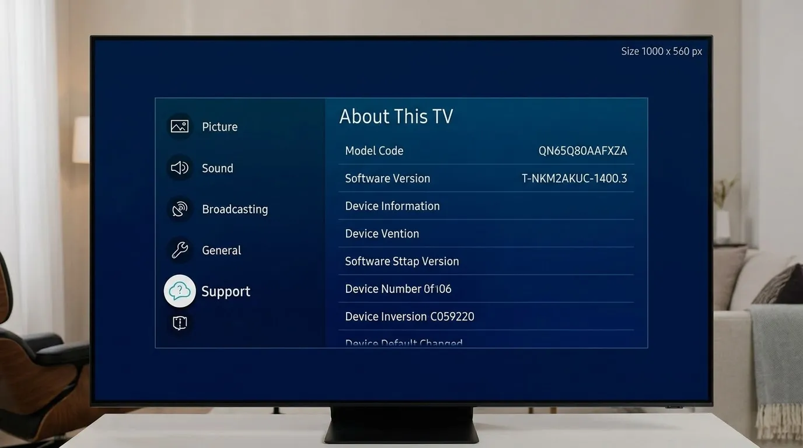
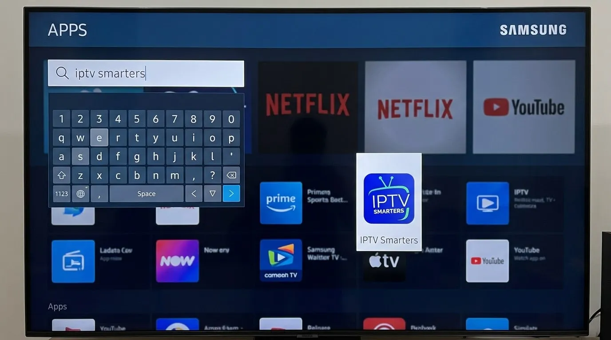
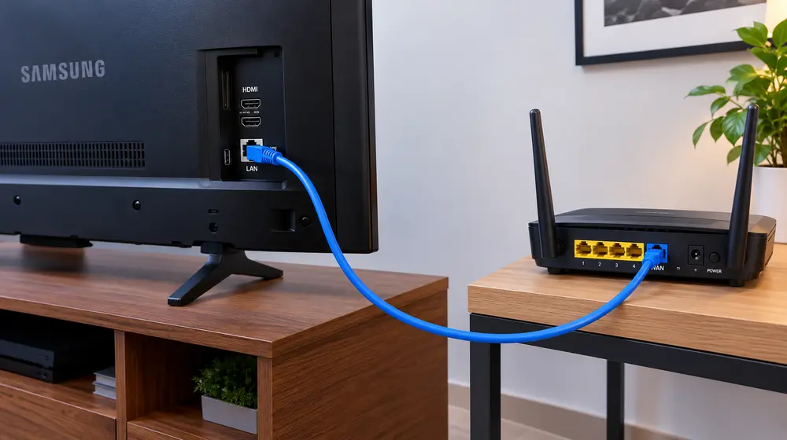

How to Install IPTV on Samsung Smart TV

Most recent Samsung Smart TVs run the Tizen operating system and have an app store with several IPTV-capable players. Availability changes by model year and country, so this guide shows the general process and a fallback option.
Check your TV first
Open Settings, Support, About This TV to see your model. Connect the TV to your network and update the software so the app store shows current apps.

Install a player app
- Press Home and open Apps.
- Use the search icon and type the name of a player you want, such as IPTV Smarters or another IPTV player.
- Select the app and choose Install.
- Open the app once installation finishes.
Add your playlist
Most players ask for a playlist link or a username and password. Enter the details exactly as provided. If you are unsure what a link is, read our M3U playlist guide.

If you cannot find an app
App availability depends on region and model. In that case the simplest solution is an external device. A Firestick or an Android box plugged into HDMI works on any TV.

Tips for stable playback
- Wired Ethernet is more stable than Wi-Fi on most TVs.
- Keep the TV software updated.
- Restart the TV if the app feels slow.
For slow channels, see our buffering guide and speed requirements.
Frequently asked questions
Does every Samsung TV support IPTV apps?
No. Older models may not have a suitable app. An external streaming device is a reliable alternative.
Can I cast from my phone instead?
Some players support casting, but a native app on the TV or a streaming stick is usually smoother.
Do I need a USB or file transfer?
Normally not. Most apps accept a URL or login typed with the remote.